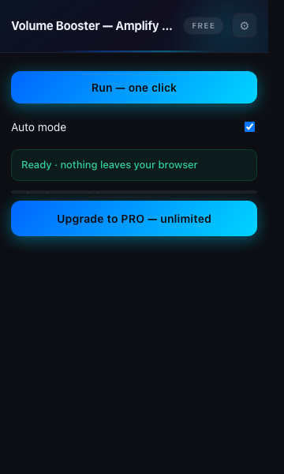

You've maxed out your volume and the audio is still too low to hear properly.
Add to Chrome — Free
Yes — it captures the tab's audio output stream regardless of the site.
No. All processing is local; nothing leaves your device.
tabCapture + activeTab are sufficient — it only ever touches the one tab you explicitly activate it on.
The WebAudio gain node is extremely lightweight — negligible overhead.